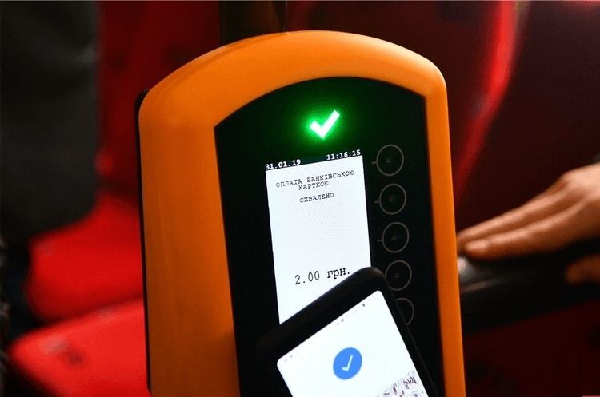

Популярні опитування
Безконтактна оплата в комунальному транспорті
Опитування розпочалося, 7 вересня, 2022

Безготівкова оплата стала невід’ємною частиною сучасної людини – люди все більше віддають перевагу розрахунку карткою або безконтактними платежами за допомогою технології NFC на своїх смартфонах. Ця тенденція торкнулася і оплати проїзду в громадському транспорті. Однак у зв’язку з появою все нових можливостей у пасажирів виникає ще більше питань: чи можна оплатити проїзд банківською карткою і чи можна поповнити транспортну карту онлайн?
ГолосуватиЗабезпечити студентів автоматами з усіх предметів
Опитування розпочалося, 22 вересня, 2022
Здати залік «автоматом» - значить отримати жадану позначку «зараховано» без усного опитування або виконання всіляких письмових тестів, тобто «автоматично».
Голосувати